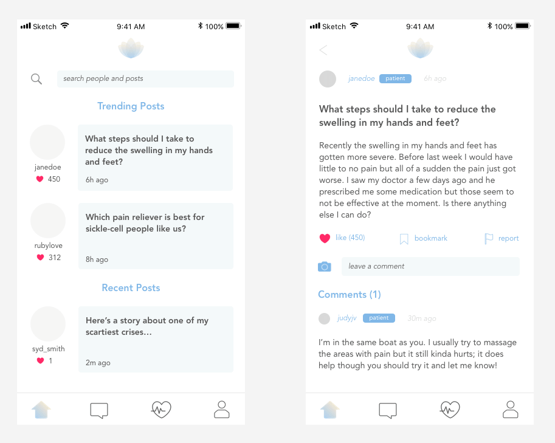
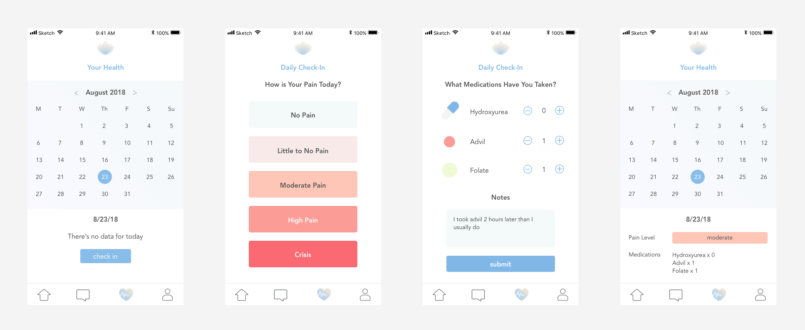
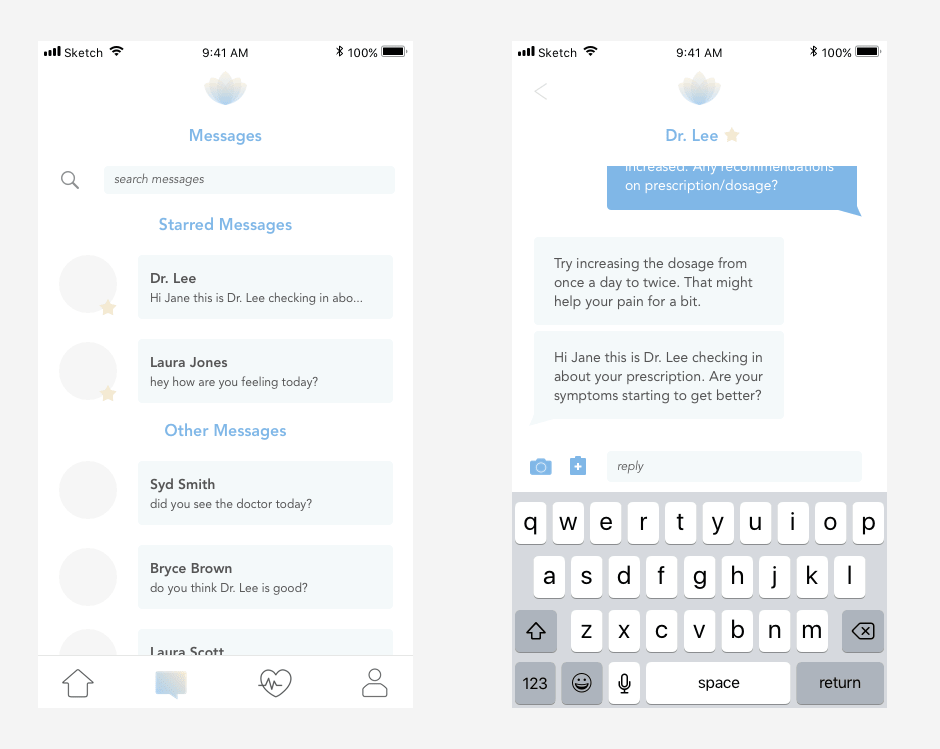

Last summer, I was assigned with a team to create any technological solution for sickle-cell patients. We decided that to make life sweeter for sickle-cell patients, we should create an application that offers patients a community, reliable and quick access to information and convenient contact with health-care professionals. We called our finished product honeysuckle. Below, I will talk about the brand design, presentation design and UI/UX for the prototype application that we made.
Honeysuckle Presentation Design
Honeysuckle Application Prototype
Logging In
Users are welcomed to a login screen. They can simply login if they have an existing account; however, if they are a new user, they must follow the on-boarding process.
1. choose what type of user you are (patient, caregiver or healthcare professional)
2. put your birthday in
3. put your location in
4. create a username and password.
First, we ask the user if they are a patient, caregiver or healthcare professional. This way, when using the application, other users can identify what kind of experience/expertise a certain user holds. Age is useful for medical reasons and location is useful in catering certain information to users based on location. Finally, username and password will be essential for future logins.
Homepage and Discussions
When first opening the application, users will land on the home page. On here, users will be able to search for posts and people as well as see recent posts and trending posts. Through this forum, users can ask questions, leave comments and ultimately utilize discussion posts as a way to form community and digest/give out information.
Posts with alot of likes will reach the trending spot. The team thought it was important to have a trending section because if a post is helpful or liked by many then it could be potentially be very useful to others as well. For example, in this UI, user janedoe talks about swelling in the hands and feet, a very common experience for sickle-cell patients. Any advice that can come out of this discussion thread would be useful to the Honeysuckle community.
Health Monitoring
When creating this application, we wanted to make daily health logging a convenient routine for users. This way, they can keep track of their pain, medication intake and ultimately have more control over their symptoms and sickle-cell disease. When opening the “Your Health” tab, the user is introduced with a calendar. They can click on each day and it will potentially show medical data for that certain day. However, as in the example above, if a user didn’t record data for a certain day yet (August 23, 2018), then they will be asked to check in.
1. First, the user will be asked to record how severe their pain was that day. One of the common things sickle-cell patients all face is pain; while most days the pain is nonexistent to mild, there are days where it can be severe (this is regarded as a crisis). Thus, by recording day-to-day one’s pain level, one can evaluate in general how they are doing and decide how their pain levels should influence their lifestyle and/or medication intake.
2. Second, the user will be asked to record what medications and how much of each medication they have taken that day. In the example above, the user has a history of taking Hydroxyurea, Advil and Folate, which are all common medications that sickle-cell patients take to reduce pain and promote red blood-cell production. After that, users can leave a note to leave themselves a reminder of the future or note any inconsistency.
After the user is finished checking in , the data is logged and now for the day of August 23, 2018, the user can see their pain level and medication intake.
The team also wanted doctors to have a closer relationship with their patients and vice versa. Based on our research, we figured out that not that many doctors have solid expertise in treating sickle-cell anemia. Also, a large demographic of sickle-cell patients are lower income and African-American and thus lack the privilege and resources to access the best care they can get.
Therefore, a messaging and health-record sharing system was implemented. Once a user checks-in their data, they can choose to share the record and choose the recipient(s). When selecting a recipient users can also choose to share all their records or just the one for a given day. I opted to include this option because if a user has been working with a certain doctor for a while it makes sense to routinely give the doctor necessary, daily data. Once the data is sent, it will be sent via the user’s message room with their doctor. The clipboard with the cross icon is representative of a health record and the background color is determined by the pain level the user put when checking in. This way, when doctors open the message, they will immediately know how to respond to the user’s pain level.
Messaging
As mentioned above, users will have the option to message other users; this could be patients, caregivers and/or doctors. When opening the message tab, users will have the ability to search through messages and also star certain messages (starred messages will always appear at the top regardless of chronological order). We thought that prioritizing messages, with for example, doctors would be an essential feature for patients. We wouldn’t want important messages from a user’s personal doctor to be drowned by less serious messages.
When entering a messaging room, users can send textual messages, photo messages and also their health record(s). I thought that including a way to send a health record through the message room also will be convenient for the user so that incase they want to send a health record while in a messaging room they do not need to through the aforementioned process.
More to be Added Soon
Thank you for taking a look at my work so far! While this was a project my team and I worked on over the summer, I wanted to take the time to improve it so I will be continually uploading more content. Currently, I am thinking of ways to better design the "profile" tab of the application that has not yet been discussed.